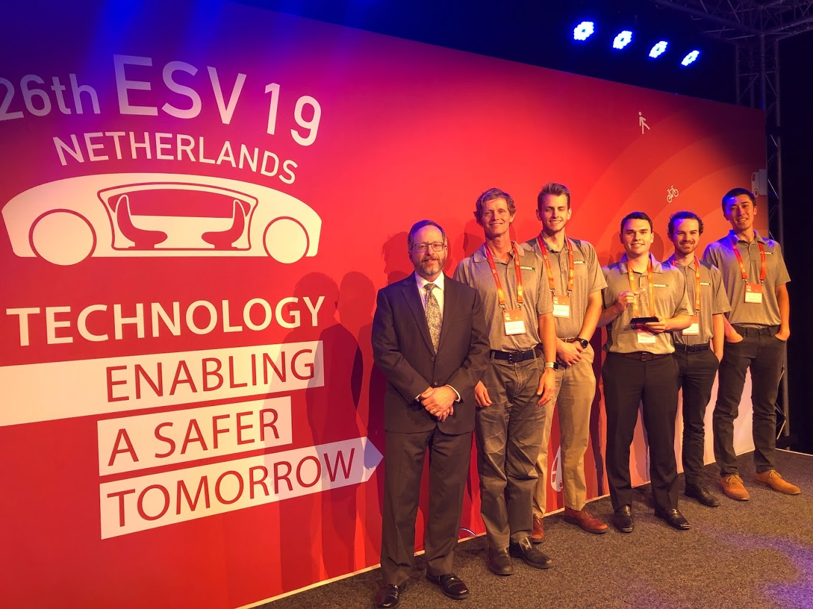

I am computer science master's student at Cal Poly, San Luis Obispo with a passion for autonomous vehicles. Not only will autonomous vehicles revolutionize society, they present fascinating challenges in the fields of artificial intelligence, machine learning, computer vision, and more. I have had the opportunity to tackle some of these challenges through my summer research, senior project, and thesis.
In my free time, I enjoy biking (especially wheelies), continuing my 760+ day streak on Duolingo, playing racquetball, and traveling (the above picture is from my recent Europe trip!).
Please check out my senior capstone project! We just placed 2nd at the Enhanced Safety of Vehicles Conference in the Netherlands!
I currently work in the software tools group and I am improving an existing tool for generating cause & effect diagrams for failure modes. [more]
I implemented lane keeping on a small-scale autonomous vehicle while working under the guidance of Professor Charles Birdsong. [more]
As a Quality Inspections Intern, I wrote code to automate office processes and data processing, which saves my past supervisors 60% FTE on a recurring basis. [more]
I tutored engineering students in lower-division and upper-division engineering coursework, which strengthened my technical communication skills and instructional abilities. [more]
My master's thesis will be the development of an autonomous vehicles simulator, which can then be used to study platooning and the security aspects of autonomous vehicles. [more]
Our capstone project, Autonomous Vehicles Operating Collaboratively And Detecting Objects (AVOCADO), is a platoon of autonomous vehicles that work collaboratively to navigate a roadway safely by using lane keeping, object detection and classification, and vehicle-to-vehicle communication. Click the link to check out the videos! [more]
As part of a team of three students, I helped develop an autonomous hockey table that could play against a human player. Click the link to check out the videos! [more]
This website, which I write, is an opportunity to practice HTML, CSS, and eventually, JavaScript. [more]
Designed, built, and flew my own quadcopter. The experience, which taught me rapid prototyping and independent work, was great fun until I crashed my quadcopter and it broke. [more]
Thesis: Autonomous vehicle simulation
Graduation: December 2020
Mechatronics concentration with a computer science minor
Summa cum laude with honors
Graduation: June 2019
Dean's Highest Honors